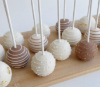

Red Velvet Cake Pops
by Jaileena T

A sweet bite-sized, red-velvet cake pop treat, perfect for celebrations, holidays, or just to enjoy!

A sweet bite-sized, red-velvet cake pop treat, perfect for celebrations, holidays, or just to enjoy!
I loved the texture of the cake pop, and it was a good amount of sweetness.
Could've been better. Too sweet for my liking, and also too moist. I'd recommend another recipe if you don't like yours too sweet and moist.
Soo yummy!! Decorating adds to the fun! I love the texture, and my family does too! Thank you for this recipe, i'll definitely be making these again!